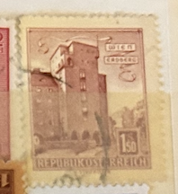
| SOURCE | TITLE| IMAGE MATCH | click to source page |
| www.ebay.com | Austria #623 VF USED - 1958 1.50s Rabenhof Building ... | 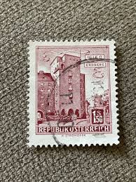 |
| www.ebay.com | FREE SHIP Austria Housing Rabenhof Vienna-Erdberg 1965 House ... | 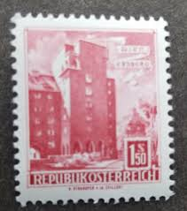 |
| www.ebid.net | Austria.SG1307 1s 50 "Rabenhof" Flats,Erdberg,Vienna.Fine ... | 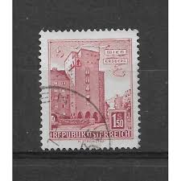 |
| www.shutterstock.com | 50 Vienna Erdberg Royalty-Free Images, Stock Photos ... | 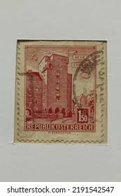 |
| fr.todocoleccion.net | 2 sellos de austria casa rabenhof en viena 1957 - Acheter ... | 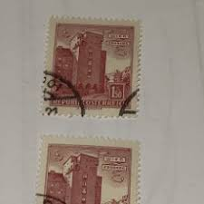 |
| www.ebay.com | Austria 1958 1.50s Buildings Rabenhof Flats Erdberg MNH ... | 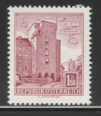 |
| www.alamy.com | Erdberg, Vienna, postage stamp, Austria Stock Photo - Alamy | 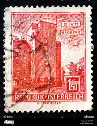 |
| aukro.cz | Stará poštovní známka - Znak s dvouhlavým orlem 5kr. - R-U ... | 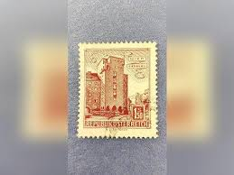 |
| colnect.com | Austria: Housing "Rabenhof", Vienna-Erdberg, 1965 : US$ 0.18 ... | 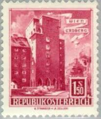 |
| www.shutterstock.com | 14 Housing Rabenhof Royalty-Free Images, Stock Photos ... | 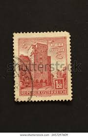 |
| www.todocoleccion.net | austria - v/f 1,50 s - año 1957 - arquitectura, - Compra ... | 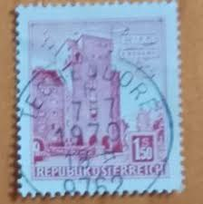 |
| www.dreamstime.com | Housing Rabenhof, Vienna-Erdberg, Buildings Serie, Circa ... | 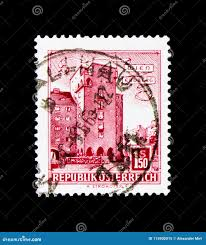 |
| www.hadleigh.org.uk | How to choose the right neighborhood for you | 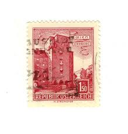 |
| www.ebid.net | AUSTRIA, BUILDINGS, Rabenhof, Vienna-Erdberg, grey 1958 ... | 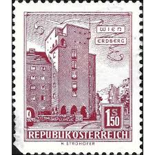 |
| www.postbeeld.com | Stamps with the theme World Heritage - PostBeeld - Online ... | 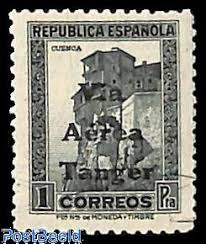 |
| www.hipstamp.com | Austria #623 MNH 1958 Buildings 1.50s Erdberg Vienna ... | 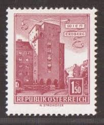 |
| www.mysticstamp.com | M4685 - Morocco, 100 Different Stamps - Mystic Stamp Company | 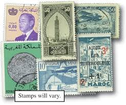 |
| www.philaseiten.de | Wertschätzung Jugendsammlung - Philaseiten.de | 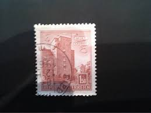 |
| www.ebay.com | SPAIN STAMPS 1936 ANNIVERSARY MADRID PRESS ASSOCIATION MH ... | 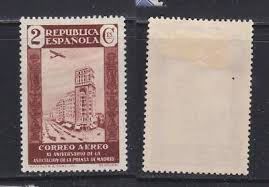 |
| filateliakevorkian.com | SPANISH MOROCCO (TANGER) STAMPS, 1938 - CHARITY STAMPS - YV ... | 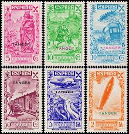 |
| www.alamyimages.fr | Autriche - 1958 Timbre Photo Stock - Alamy | 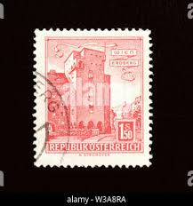 |
| www.hipstamp.com | 1930 - 1936 Spain Twenty Airmail Stamps | Europe - Spain ... | 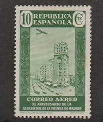 |
| www.kenmorestamp.com | 1966 Spain Year Set - 68 stamps | 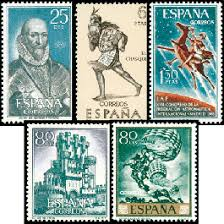 |
| www.alamy.com | Rabenhof, Erdberg, Vienna, postage stamp, Austria, 1957 ... | 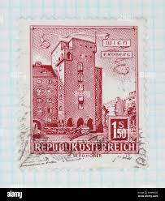 |
| www.shutterstock.com | Karnal Haryana India -may 22nd 2023-closeup Stock Photo ... | 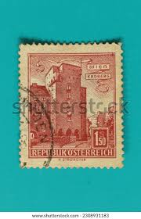 |
| www.etsy.com | 30 Stamps of Buildings, Architecture Stamps, Vintage Stamps ... | 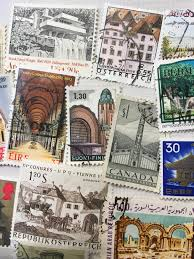 |
| www.pinterest.com | Discover 120 Morocco (Maroc)-Postage stamps and postage ... | 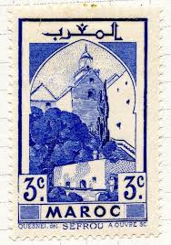 |
| www.mysticstamp.com | 759 - 1935 4c Mesa Verde Colorado, Brown, Imperf. - Mystic ... | 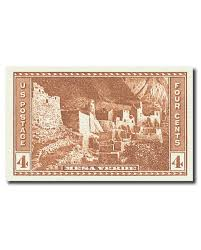 |
| en.todocoleccion.net | austria. casa rabenhof, vienna. 1958. yt-872b. - Buy Stamps ... | 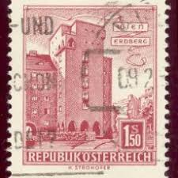 |
| www.mesaverde.org | Mesa Verde Commemorative Stamp 1934 | Mesa Verde Association | 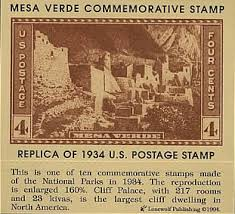 |
| www.reddit.com | Sorting new stamps is the best! : r/philately | 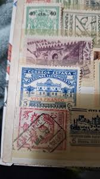 |
| www.amazon.com | Amazon.com: Austria 790 (Complete.Issue.) unmounted Mint ... | 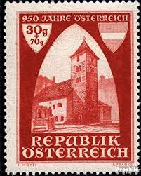 |
| www.facebook.com | Don Carlos Stamps and Coins (@DonCarlosStampsAndCoins ... | 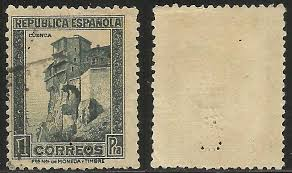 |
| www.freestampcatalogue.com | Stamps from Togo - Freestampcatalogue.com - The free online ... | 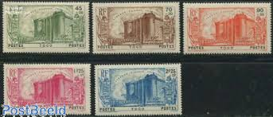 |
| www.stampcommunity.org | España – Spain: Paisajes Y Monumentos - Stamp Community Forum | 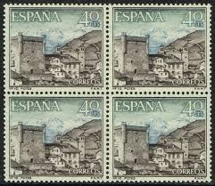 |
| austrianphilately.com | The old rural mail delivery & collection system | Austrian ... | 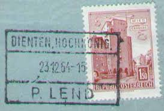 |
| www.etsy.com | Vintage 1958 Brazil Brasil Duque De Caxias Used Postage ... | 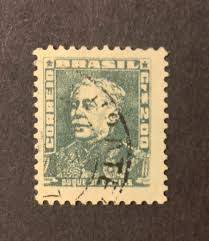 |
| www.youtube.com | Stop Throwing Away These Valuable Stamps From Spain To Hong ... | 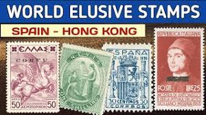 |
| www.wallapop.com | Edifil 673 MNH ** (Bloque 4) [Casas Cuenca] de segunda mano ... | 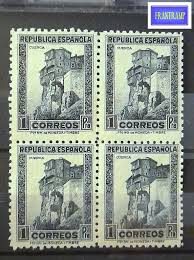 |
| www.hipstamp.com | Austria 1958 Sc#623 1.50s Red Erdberg Wien USED-Fine-VF ... | 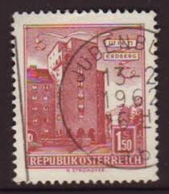 |
| www.istockphoto.com | 1,000+ Spain Stamp Pictures Stock Photos, Pictures & Royalty ... | 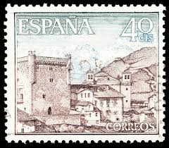 |
| www.stampcollectingblog.com | Forgeries of Spanish State 1936 definitive postage stamps | 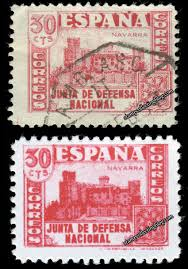 |
| philatelic.co.uk | Cyprus – Mark Bloxham Stamps Ltd | 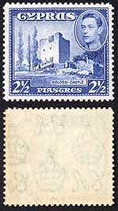 |
| en.wikipedia.org | Postage stamps and postal history of San Marino - Wikipedia | 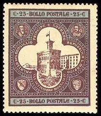 |
| www.freestampcatalogue.com | Stamps from Spanish Morocco - Freestampcatalogue.com - The ... | 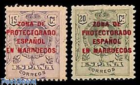 |
| www.collectorbazar.com | Spain - FDC - 1967 Castles and Abbeys (P-055/A) | 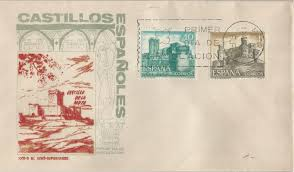 |
| www.tradera.com | Österrike. FDC från 1953 med vinjett. | Köp på Tradera ... | 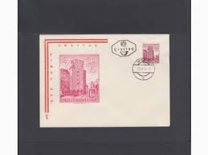 |
| www.arpinphilately.com | Buy Portugal #668 - Almourol Castle (1946) | Arpin Philately | 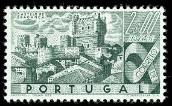 |
| lamasbolano.com | SELLOS IRLANDA 1982 ARQUITECTURA IRLANDESA A TRAVES DE LOS ... | 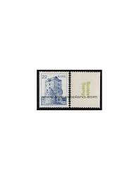 |
| www.osta.ee | i-730 leiunurk varia (247385990) - Osta.ee | |
| www.empirephilatelists.com | Rare Cyprus Stamps | 30%-50% Off in Clear Out Sale | |
| www.instagram.com | 100 Best Food Cities to Visit in 2026: www.tasteatlas.com ... | |
| www.facebook.com | What is the value of these Portuguese Indian stamps? | |
| indianhobbyclub.com | PORTUGAL INDIA ~ CORREIO, 1951 ~ 3 DIFFERENT ~ POSTAGE RARE ... | |
| www.ebay.com | Stamps French Andorra Scott #89 nh | eBay | |
| www.bidcurios.com | Portugese India Set of 3rd Centenario Da Nascimento Padre ... | |
| www.youtube.com | Groups Of Old Chile Postage Stamps - YouTube | |
| www.stampcommunity.org | Oficina De Tanger - Stamp Community Forum | |
| www.mysticstamp.com | 743 - 1934 4c Mesa Verde, Colorado, Brown, Perf. 11 - Mystic ... | |
| www.reddit.com | Is this legal? : r/postcrossing |